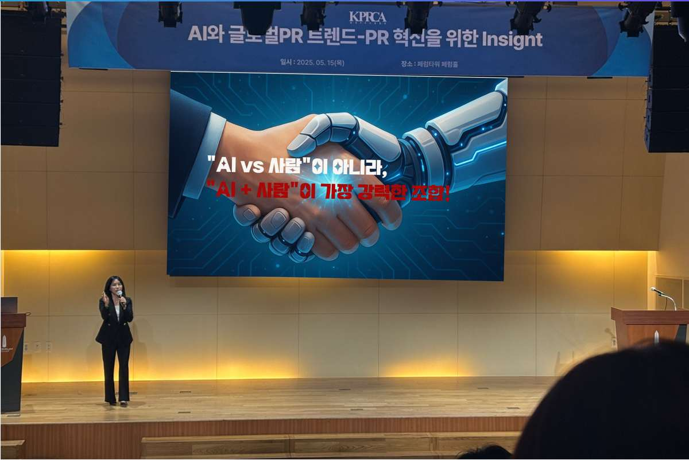

EXECUTIVE AX TRAINING
임원·관리자 AX 전환 교육
CEO·임원·부서장이 AI 도입 우선순위, 업무혁신 기회, 리스크, 인력 역할 변화와 90일 실행 로드맵을 결정하도록 돕는 전략교육입니다.

추천 대상
CEO·임원·기관장·부서장·중간관리자와 AX 추진 책임자
CEO·임원·기관장·부서장·중간관리자와 AX 추진 책임자
운영 방식
60분 브리핑 · 90분 특강 · 2시간 전략 워크숍 · 반일 의사결정 과정
60분 브리핑 · 90분 특강 · 2시간 전략 워크숍 · 반일 의사결정 과정
PRACTICE
실제 업무로 실습합니다
도구 기능을 따라 하는 데서 끝내지 않고 참여자의 업무과제로 결과물을 완성합니다.
- 생성형 AI 활용과 AX 전환의 차이
- 산업·공공부문 AI 활용 동향
- 조직의 업무혁신 기회 발굴
- AI 도입 리스크와 책임 체계
- 임원·관리자의 역할과 의사결정 기준
- 단계별 AX 실행 로드맵 설계
OUTCOMES
교육 후 남는 결과물
조직별 AI 적용 우선과제
교육 시간 안에 직접 만들고, 교육 후 현업에서 이어서 활용합니다.
임원 의사결정 체크리스트
교육 시간 안에 직접 만들고, 교육 후 현업에서 이어서 활용합니다.
부서별 역할과 검토 기준
교육 시간 안에 직접 만들고, 교육 후 현업에서 이어서 활용합니다.
30일·90일 AX 실행 로드맵
교육 시간 안에 직접 만들고, 교육 후 현업에서 이어서 활용합니다.
DESIGN PROCESS
담당자와 함께 맞춤 설계합니다
1
사전 확인
대상·업무·수준·보안환경 확인
2
과정 설계
시간·난이도·실습과제 구성
3
현업 실습
실제 업무와 유사한 자료로 수행
4
적용 지원
결과물·가이드·후속과정 제안
FAQ
교육담당자가 자주 묻는 질문
기술을 잘 모르는 임원도 이해할 수 있나요?
가능합니다. 도구 사용법보다 경영 판단, 적용 우선순위, 리스크와 조직 운영 사례를 쉬운 언어로 설명합니다.
우리 산업 사례를 반영하나요?
사전 인터뷰를 통해 산업과 조직의 주요 업무를 확인하고 관련 사례와 토론 질문을 구성합니다.
특강과 워크숍의 차이는 무엇인가요?
특강은 공통 이해와 방향 설정에, 워크숍은 실제 우선과제와 실행 로드맵 도출에 초점을 둡니다.
우리 조직에 맞는 교육안이 필요하신가요?
기관명, 교육대상, 인원, 희망일정과 해결하고 싶은 업무를 알려주시면 과정과 운영방향을 제안해 드립니다.